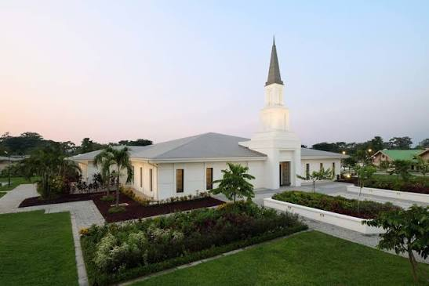
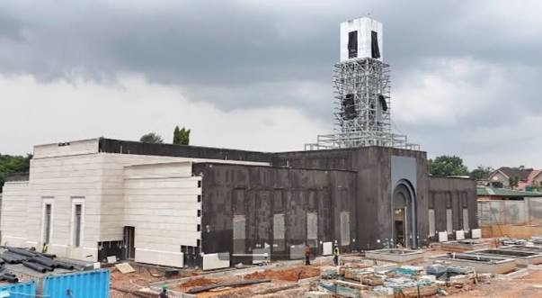
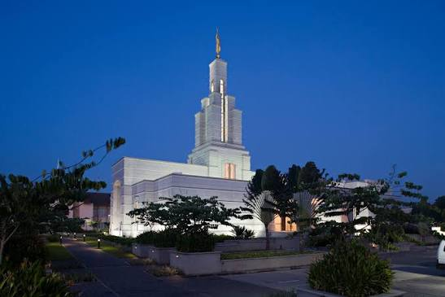
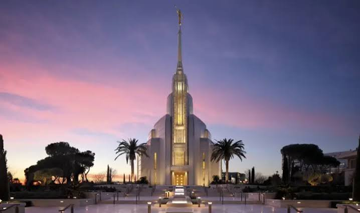
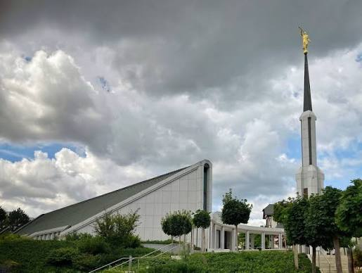
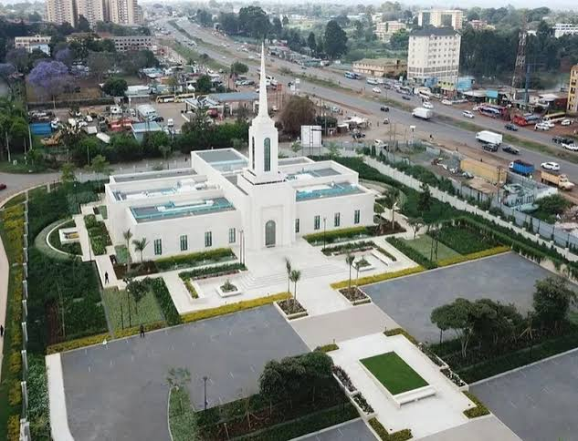

Temple Album
Home
Old
New
Large
Small
Temple Gallery

Kinshasa DR Congo Temple

Lubumbashi DR Congo Temple
Johannesburg South Africa Temple

Accra Ghana Temple
Paris France Temple

Rome Italy Temple
Salt Lake Temple

Frankfurt Germany Temple

Nairobi Kenya Temple